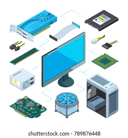

Hausaugabe
Sawsan-Difü Tarraf-Coding Atasi
Frage 1 Nennen sie 10 pc /laptop arten
Pc,Laptop, Smartphone,I pad
, Fernseher
Kaffeemachine,
Druker,
Maus,
Bildschirm,
Lautsprecher
Frage 2 Nennen sie Smartphone und Tablet Hersteller
Apple ,
Google,
Samsung,
Sony,
LG,
Acar,
Huarwei,
IHC,
Blackberry,
Frage 3
Nennen sie 10 Hardware
Monitor,
CPU,
Ram/Rom,
Motherbord
PSU
ODD,
HDD,
Tastartur,
Smartboard

Frage 4 Nennen sie 15 software
Lokasirung,
IOS ,
Crome ,
Windos(10-15) ,
Linox ,
Android,
Weblinks,
Mikrosoft,
Apps,
Almo,
G*Power,
GeoDa,
grett,
Marcos,
Frage 5 Nennen sie 10 Bitribssysteme
Linox,
Windos,
Macos,
Crome,
Android,
Unix,
Windos XP/7/8,
Wikipedia,
Newton,
IOS4-15,

Frage 6 Nennen sie 3 Zahlensysteme
Dizimalsysteme(Zehnersystem)
Dialsystem(zweiersystem)
Hexadizimalsysteme(Sechszehnersystem)
Erklärung
Jedes Computer / Laptop
etc. hat ein Zahlensystem.diese
Zahlensysteme sind für das gerät wie ein code das das gerät schneller die sachen erkent
und vorgehen kan